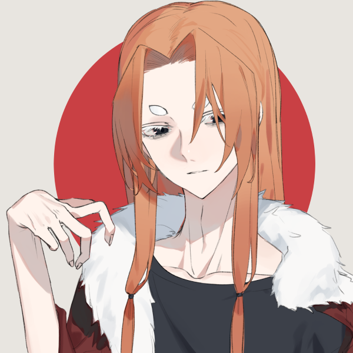
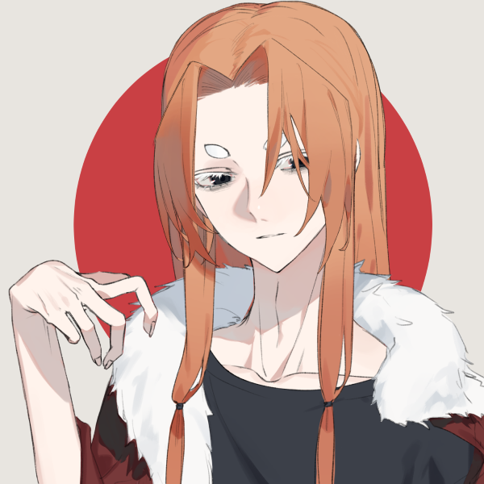

One of the things I love to do is to go on Picrew and make tons of fun characters, some based on ideas I already had and some that just come to me in the moment. Sometimes I like those characters enough that they get their own backstory, and sometimes those characters actually get a whole story written using them.
Here are some my my favorite OCs that I've made over the years:
Bloodheist
"This story isn't about vampires. It's just a normal slice of life about a normal boy and his normal friends. Nothing strange going on in this book, I promise."
This is a story that Joe and I are writing about a boy named Connor who figures out that he's a vampire and subsequently joins a group of vampires and steals blood from his job at the blood donation charity. Bloodheist has become our baby over the past couple years. We haven't made too much progress on writing because of how busy the both of us are, but all the ideas we come up with (I think) are pretty solid. Evil corporation, cute main romance, relateable mc, weirdo best friends... ok well maybe this story is tailored to my own interests.
Connor Sterling
- 24 years old
- Very tall and perpetually nervous
- Not good at hiding the fact he's a vampire
- Yes he is freaked out by blood
- Best friends with Lyn and has a crush on her (but would never tell her)
- Has trouble finding/ holding a job because of his social anxiety
- Smart/ breezed through school, but has a hard time connecting with others
- Likes to collect cool/ rare knives
Gwendolyn "Lyn" Foster
- 25 years old
- Smol gremlin e-girl freak
- Went to college for coding and likes to hack websites for funsies
- Childhood friends with Connor
- Has a crush on Connor but is waiting for him to make the first move, so she just messes with him
- Doesn't leave her apartment often, only when she needs to
- No one knows what her job is, only that she makes a lot of money doing it
- Streams on Twitch but never gets many viewers
Silas Winfield
- The head of the vampire coven that Connor joins
- Cool and good looking, a smooth talker
- Comes off as a good role model even though he might not actually be too good of one
- Only smokes around other people because he thinks it makes him look cool
- He jokes about being a vampire so much that his non-vampire friends could never believe he really is one
- Horny, but respectful
- Wears fake glasses (also to seem cool)
- Doesn't use colored contacts to hide his vampire grey eyes cause he thinks he looks cooler
Grayscale and Color
"Two worlds exist: one in grayscale and one in color. Most people in either world don't know that the other one exists, except for a select few. Citizens of each world are prevented from traveling to the other. Somehow, a child from the grayscale world ends up on the steps of an orphanage. Not knowing what to do, they are taken in, adopted by a nice family, and raised in the color world. One day, on the child's 13th birthday, they disappear, leaving behind only a note to their best friend, telling him about the greyscale world and how to find them."
So this story idea is one that I came up with all the way back in middle school. I had written a couple of chapters of it on my first computer, and reading it back as an adult I was like 'hey this is actually a pretty cool idea'. I spent some time workshopping the story and characters and something cool started to take shape. I still have a lot of work to make it a full fledged story, but the characters I created hold a special place in my heart and will probably forever be some of my favorite OCs.
And yes, every character is named after a color. Pretty cringe but I thought it was cool at the time okay?
Jasper Blair
- 12 years old
- Bold and outspoken, class clown of the friend group
- Best friends with Ren, have been together since childhood, Ren was his neighbor. They grew up together and have been inseparable since
- Very perceptive, notices when things are wrong with his friends, and usually knows exactly how to help
- An unintentional troublemaker, usually too bold and adventurous and gets his friend group into trouble
- He and Ren are soulmates, not necessarily in love but forever partners and should never be separated
- Loves his sister a lot, gets mad whenever people call her weird, very protective of her
- Aries energy
Marengo "Ren" Mata
- 13 years old
- Quiet and reserved, loves his friends a lot even if he doesn't show it very often.
- Doesn't talk much, usually communicates with expressions and gestures
- The glue that keeps the friends together, his friends love him very much
- Secretly likes hugs
- Loves sweets, especially homemade cake
- After he disappears, the only people who remember him are his friends
- World shifter: able to shift between the two worlds at will
Lilac "Lila" Wood
- 12 years old
- Most reserved of the friends after Ren, but gets sassy with her friend group.
- She is the smartest of the group, and usually the one to get everyone out of the trouble that Jasper gets them into.
- Classmates don't like her cause they think she is a teachers pet/ cheats because of how good of a student she is
- Admires Lem's free spirit a lot, gets worried for them often cause they're always being rough (Mom friend)
- Really doesn't believe in Jets conspiracies and often rebuts his claims about ghosts/ conspiracies
- Constantly sassy with Jasper, argues about who is taller, refuses to give him bandaids even though she would give one to her other friends (unless he really needs it)
- Has a pink Motorola RAZR, is the only one of her friends to have a cell phone
Salem "Lem" Litha
- 12 years old
- Sunshine incarnate, very active, usually covered in bandaids and scratches
- Wild child, hyperactive
- Cuts their own hair cause they don't think a hairdresser could do it right (but right just means really messy)
- Easily persuaded into doing things, especially by their friends
- Very trusting, so ends up being gullible
- Falls out of trees often.
Jet Maddox
- 12 years old
- Short temper, first one to get in a fight if someone bad mouths his friends
- Into the occult, ghosts, conspiracies, probably has a demon attached to him that protects him
- Actually can connect to spirit through seance/ his ouija board
- Tries to scare his friends a lot but they are used to it
- Attached to Auburn, probably has a crush on her a little
- Real name is actually Fern, but he really hates the name because he was relentlessly bullied for it
- Has a loving older brother who embraces him no matter what he does
- Makes Auburn paint his nails black cause he's too scared to do it at home
- Definitely thinks bigfoot lives in his backyard
Auburn Blair
- 14 years old
- Jaspers older sister, she cares for him greatly
- An outcast, so hangs out with her brother's friends, but they are closer to her than anyone her age would have ever been.
- Likes old style clothing, particularly shirts.
- Collects old books (probably doesn't read them though)
- Her and Jasper created a language that only they knew when they were kids and sometimes still use it when they dont wanna get into trouble
- Likes to bake sweets for her friends because she feels like she doesn't have anything to contribute to the group otherwise
- Like an older sister to Ren because he doesn't have any other siblings, and she knows how much Jasper cares for him
Erebos
"Altair is a witch. Not just any witch, he is the heir to one of the high mage families; the Blackthornes. Known for their scribe magic, they can use their pen and paper to make almost any spell you can think of. Altair has been learning his family's magic ever since he was a child with rigorous classes for as long as he can remember. One day during his training, a major summoning spell goes awry, and it was the last straw for both Altair and his family. The usually timid Altair grabs his journal, leaves the family mansion, and runs into the dark forest. The next thing he remembers, he is laying on the street in an unfamiliar town with an unfamiliar girl by his side."
Ah yes, this is one of those story ideas that came to me after I created the character in Picrew. I made Altair (the mc) and thought 'hey he looks pretty cool, I wonder what I could do this this...' and I started to come up with things like why his eyes were different colors and why he looked so afraid.
I don't have much written for this story besides some idea brainstorming, so hopefully one day I'll get around to writing more of it.
Altair Blackthorne
- 19 years old
- Was the heir to a powerful mage family, but made a pact with a demon/ rogue mage
- Lost his memories and his eye turned white as a result of the pact
- Treated pretty shittily by their family because they were expected to be the next heir to be the head of the family, so they were pushed pretty hard in their studies
- Made the pact to get back at his family, and once he regained his memories teamed up with the demon Lumaeria to bring ruin to the witch society hierarchy
Lumaeria
- Centuries old dark/ celestial witch who enjoys messing with people for her own amusement, particularly members of the great witch families
- Right eye turns white to signify the pact made with Altair
- Tall, has a large presence because of their abundance of magical power
- Can transform her form, no one is sure what she actually looks like, but comes to Altair in the form in the image
CBMDIAW
"The first moments of consciousness I had after waking up were disorienting, but not unpleasant. Before I had a chance to open my eyes I could hear the gentle rustling of leaves, I could feel the grass beneath me, soft and sweet smelling. Feeling the warmth of the sun on my face reminded me of that morning's walk in the park, bringing the events that had just occurred to the front of my mind. When I finally opened my eyes, I saw the clear blue sky that seemed to stretch into infinity above me, behind me were tall trees at the edges of my vision swaying gently in the breeze. In front of me was an open field with buildings in the distance dotting the horizon.
Ah, so that fall must've really killed me, I thought. It's too nice here to be hell, so this must be heaven… but how did a no life loser like me even qualify to make it to heaven? For a brief moment, a memory of the nightmares that plagued me for so long surfaced. At least I was the one to die instead of Maro. I hope he'll be okay without me."
I am not going to write the full title of this story because uh... yeah. You will just have to use your mind and try to figure out what it means, and I guaratee you that you will not figure it out.
This is a story of Kenta and Maro, a man and his dog who get isekai'd into a fantasy world. Kenta believes that it's finally his chance to make something of himself, but he does not know the struggles that this world will bring.
Kenta
- 20 something years old
- Pre Isekai: Obsessed with playing goon level visual novels and doesn't really care about anything else (except his dog)
- Reincarnated as the lowest class (support/ cleanup crew)
- Forms a party with Maro once they find each other
- Befriends/ romances a cute girl, eventually they get married
- Ends up kicked out of his own party because he is not a high enough rank/ not good enough
- He is betrayed by his best friend and his wife and he realized that he's had enough
- Makes a deal with a dark entity to get revenge, gets turned into a half dog/ half human in exchange for great power
- Just wants a cute puppy and a harem but instead gets depression and death
Maro
- 5 or 6 in dog years - late 30s in human years
- Pre Isekai: Kentas pet shiba inu, very loyal to Kenta and a good boy
- Ends up becoming human when he is isekai'd
- Actually a being chosen by the gods, so ends up being blessed with strong powers and high charm/ everyone is drawn to him
- Still remains a good friend/ loyal partner to Kenta when the meet up
- After Kenta becomes evil he feels very conflicted on what to do- should he be with his friend or uphold his duty as divine protector?
 

Miscellaneous OCs
Here is where I'll put all of my random OCs that don't really have stories or anything. Some of them are related/ in the same universe, but I haven't written anything concrete using them yet.
I may be cringe, but I am free.
Zalya
- Emo af Gamer Girl
- RBF so everyone thinks shes mean but is actually really shy
Faye
- Zalya's gf
- Cute and girly
- Actually the angry one
- “Actually she asked for a large Sprite and no pickles.”
Lawrence "Rory"
- Zalya and Faye's best friend (they all grew up together)
- Wears fake glasses to try and hide the scar on his nose
- Got his ears pierced with Zalya because she was scared (but now she loves getting piercings)
- Really tall and lanky, kinda awkward but endearing
Kit
- Rory has a crush on him (and calls him KitKat cause why not)
- Total playboy
- Mysterious?
- Probably is a vampire or ghost or some shit who knows